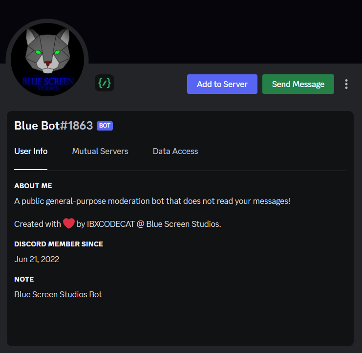

Blue Bot Introduction

To add Blue bot to your Discord server, first make sure you have the necessary permissions to manage the server. If you do not have these permissions you can not add bots. Then, Add Blue Bot You will be prompted to select the server you want to add the bot to. Once you have selected the server, follow the on-screen prompts to complete the setup process. After that, the Blue bot will be added to your server and ready to use! You can start using the bot's moderation features right away, and customize its settings using the slash commands like "/config" and "/data".